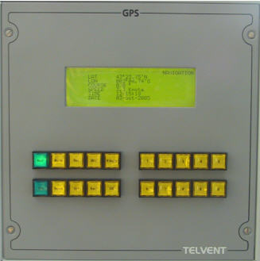

Funcionalidad
El Simulador consta de las siguientes aplicaciones software:
Ulises
Aplicación que proporciona el acceso al operador, tanto para alumnos como para instructores. Se ejecuta por tanto en todos los PC que integran el simulador, encargándose de distinta funcionalidad según la función de cada PC.
En los PC de los Puestos de Instructor, esta aplicación proporciona al operador la Consola de Instructor acceso a todas las funciones relativas a Preparación, Ejecución y Análisis de Ejercicios:
Preparación de Ejercicios – facilita el acceso a la base de datos del sistema para configurar equipos, unidades, escenarios y ejercicios. Permite por tanto, preparar los ejercicios que posteriormente se ejecutarán.
Ejecución de Ejercicios – es empleada para ejecutar ejercicios tanto en red como en local. Permite al Instructor controlar la ejecución (iniciarla, pararla y terminarla), puede modificar todos los datos del ejercicio de la misma forma que lo hace en Preparación, puede grabar y cancelar la grabación del ejercicio y puede supervisar y controlar las unidades.
Análisis de Ejercicios – permite cargar ejercicios grabados para su repetición, y proporciona acceso a las herramientas para Análisis de Ejercicios.
Para los Instructores, esta aplicación se muestra en dos monitores:


En el monitor de la izquierda se muestra la Pantalla de Presentación Cartográfica con un diálogo general, que permite al instructor realizar la Preparación, Ejecución (Control y Supervisión) y Análisis de los Ejercicios, y que incluye la visión de la situación general del Ejercicio sobre la Cartografía.
En el monitor de la derecha se muestra la Conning Display. Esta pantalla consiste en un resumen completo de todos los subsistemas de la unidad (gobierno, propulsión, maniobras, ...) y permite al instructor acceder a todas las funciones que los alumnos hacen con los distintos miméticos hardware de los Puentes. Desde los menús del diálogo con la Conning Display, el Instructor puede acceder a otras funcionalidades específicas del mismo, que no están disponibles para los alumnos, como Control de Averías, Control de las Comunicaciones, etc.
En los PC de Alumnos, distribuidos en los distintos puestos de alumno, esta aplicación se encarga de las distintas interfaces con el operador, es decir, integra la Conning Display, controla todos los miméticos hardware, proporciona, en su caso, los datos para el Sistema Visual y el Sistema de Sonorización, y envía los datos requeridos por el Simulador de Consola Radar, el Simulador de Consola ECDIS, el Simulador de Sonda de Pesca, el Simulador de Sonda de Red y el Simulador de Sonar.
En el puesto de alumno, la Conning Display es el módulo encargado de implementar una interfase de usuario en una única pantalla, que presente la información más relevante del buque propio, de forma resumida y compacta, con el fin de que el operador obtenga una visión general del gobierno del buque con sólo observar esta pantalla. Incluye la siguiente información:
- Posición y rumbo del buque propio.
- Estado del sistema de propulsión (telégrafo y propulsores laterales o UPAs).
- Viento, corredera, sonda...
- Alarmas y averías.
- Piloto automático.
- Amarras, luces, banderas...
Además de la aplicación Ulises, el Simulador integra los siguientes módulos funcionales, disponibles en los distintos puestos de alumno:
Simulador de Consola Radar
|
Aplicación encargada de simular en pantalla una Consola de Radar ARPA. Este software permite la simulación de las principales funciones de un Radar ARPA real. El alumno, mediante este software, puede familiarizarse con la funcionalidad básica de cualquier Radar moderno. Alguna de las funcionalidades soportadas por el software son las siguientes:
|
Simulador de Consola ECDIS

|
Aplicación encargada de simular en pantalla una Consola ECDIS. Este simulador permite la visualización de cartas náuticas en formato electrónico, mediante la instalación en PC de aplicaciones comerciales de edición de cartas electrónicas, tales como TELchart o MaxSea (Furuno). |
Simulador de Sonda

|
Aplicación encargada de simular en pantalla un equipo de Sonda, incorporando las funciones más comunes de un equipo convencional. |
Simulador de Sonar

|
Aplicación encargada de simular en pantalla un equipo de Sonar, incorporando las funciones más comunes de un equipo convencional. |
Vista Submarina

|
Aplicación encargada de mostrar una imagen tridimensional del mar, el fondo, la costa, el buque propio, el cardumen, los obstáculos y los artes de pesca. Con ella el alumno puede controlar la imagen presentada y consultar los datos del arte de pesca que esté manejando. |
Simulación de Ayudas a la Navegación
|  |
El simulador incorpora distintos módulos de ayuda a la navegación:
|
Instrumentos de Navegación

|
El simulador incorpora distintos instrumentos de navegación:
|
Simulación de Comunicaciones

|
Módulos de Radioteléfono, encargados de la simulación de las comunicaciones en fonía por radiofrecuencia. |
Sistema Visual

|
Este software es el encargado de presentar una imagen en perspectiva y geométricamente correcta del mar, tierra, cielo y todos los objetos que se encuentran dentro del campo de visión, en función de su distancia al origen de la imagen y a las condiciones ambientales. Permite la visualización de escenarios generados de acuerdo con la especificación OpenFlight de Multigen, con varios niveles de detalle y el uso de texturas gráficas (materiales) y fotográficas para un mayor realismo de la imagen. |
Sistema de Sonorización
Este software es el encargado de la reproducción direccional o ambiental de los sonidos asociados a la actividad en el ejercicio.